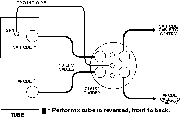

Proprietary to General Electric
Direction 5114045-800, Rev# 10
LightSpeed 4.X Service Information (Advanced)
Proprietary to General Electric |
| Required Persons | Preliminary Reqs | Procedure | Finalization |
|---|---|---|---|
| 1 |
This procedure contains the following setup, checks, and adjustments:
Install HV Divider (see Install HV Divider)
Set Up Instrumentation (see Set Up Instrumentation)
Calibrate the Cathode (see Calibrate the Cathode)
Calibrate the Anode (see Calibrate the Anode)
Measure Total kV (see Measure Total kV)
Verify kV Meter (see Verify kV Meter)
Remove the External HV Divider (see Remove the External HV Divider)
Install New Tube Program (see Install New Tube Program)
Auto mA Calibration (see Auto mA Calibration)
KV Rise and Fall Times (see KV Rise and Fall Times)
Verify Internal Scan Timer (see Verify Internal Scan Timer)
Inside the Gantry on the STC backplane:
Switch OFF the HVDC ENABLE.
Switch OFF the AXIAL DRIVE ENABLE.
Rotate the Tube to the 3 o’clock position
Engage the gantry rotational lock.
Switch OFF the 120 VAC GANTRY POWER.
Install the HV Divider between Tube and Tanks.
| NOTE: | Place the HV Divider on a table or tube hoist, so the cables reach the tube. |
| Potential for tube damage. Incorrect installation of anode and cathode HV cables can destroy the Performix tube unit. | |
Add a ground wire (minimum size of AWG 12) from Tube ground to bleeder ground. Refer to Illustration 1.
Illustration 1: HV Divider Installation

| Potential Electrical Hazard | |
| Performix tube unit MUST be grounded to the gantry during testing. |
Switch ON the 120 VAC GANTRY POWER.
Switch ON the HVDC ENABLE.
Press the button, on the gantry control panel, turning ON the drives power.
| NOTE: | If the gantry covers are removed press the RESET BUTTON on the STC backplane to turn ON Drives power. |
Reset the hardware.
Use an oscilloscope with 10X probes.
Use the Gantry Service Outlet to provide 120 Vac power for the scope. This will reduce noise on the scope waveform.
Connect channel one to the anode output of the divider. Connect the scope ground to bleeder ground.
Connect channel two to the cathode output of the divider. Connect the scope ground to bleeder ground.
| NOTE: | In order to minimize bleeder-induced ripple on the kV waveform, connect a 30 foot Belden shielded twisted pair cable between the scope probes and the bleeder. |
Trigger channel one, positive, DC couple, trigger mode normal.
Channel one and two, 10v/div, time base 200ms.
Invert Channel two.
Select [SERVICE DESKTOP] .
Select [REPLACEMENT] .
Select [HV SUBSYSTEM CHANGE] .
Select [BLEEDER SETUP (DDC)]
Verify/Set-up the following DDC parameters:
| [STATIC X-RAY ON] | Interscan Delay [2.00] |
| [1 SECOND] | DAS Gain [31] |
| [1 SCAN] | Gantry Tilt [0.0] |
| [FOCAL SPOT LARGE ] | Trigger Rate [984] |
| [100 KV] | Filter [BLOCKED] |
| [50 MA] | Calibration Vector [NONE] |
| [MONITOR ENABLE] |
Select [ACCEPT RX] . The Computer Displayed reading specification for the Cathode kV and Anode kV equals 50 ± 0.5 kV.
| NOTE: | If you use scope cursors to window the trace, position the Left Vertical Cursor to the Right of the Rising Edge of the waveform. Position the Right Vertical Cursor to the Left of the Falling Edge of the Waveform. |
Adjust the Cathode pot on the kV board, until the scope reading for the Cathode kV, and the displayed reading for the Cathode kV in the message log, fall within ±0.5kV of each other.
Use the pot, labeled CAKV, R316, on the kV board, to adjust the scope reading.
CCW decreases the scope kV.
CW increases the scope kV.
1/2 turn equals approximately 0.5 kV.
Record the results on FORM 4879.
Select [SERVICE DESKTOP] .
Select [REPLACEMENT] .
Select [HV SUBSYSTEM CHANGE] .
Select [BLEEDER SETUP (DDC)]
Verify/Set-up the following DDC parameters:
| [STATIC X-RAY ON] | Interscan Delay [2.00] |
| [1 SECOND] | DAS Gain [31] |
| [1 SCAN] | Gantry Tilt [0.0] |
| [FOCAL SPOT LARGE ] | Trigger Rate [984] |
| [100 KV] | Filter [BLOCKED] |
| [50 MA] | Calibration Vector [NONE] |
| [MONITOR ENABLE] |
Select [ACCEPT RX] . The Computer Displayed reading specification for the Cathode kV and Anode kV is 50 ± 0.5 kV.
| NOTE: | If you use scope cursors to window the trace, position the Left Vertical Cursor to the Right of the Rising Edge of the waveform. Position the Right Vertical Cursor to the Left of the Falling Edge of the Waveform. |
Adjust the Anode pot on the kV board, until the scope reading for the Anode kV, and the displayed reading for the Anode kV in the message log, fall within ±0.5kV of each other.
Use the pot, labeled ANKV, R318, on the kV board, to adjust the scope reading.
CCW decreases the scope kV.
CW increases the scope kV
1/2 turn is approximately 0.5 kV.
Record the results on FORM 4879.
Select [SERVICE DESKTOP] .
Select [REPLACEMENT] .
Select [HV SUBSYSTEM CHANGE] .
Select [BLEEDER SETUP (DDC).]
Verify/Set-up the following DDC parameters:
| [STATIC X-RAY ON] | Interscan Delay [2.00] |
| [1 SECOND] | DAS Gain [31] |
| [1 SCAN] | Gantry Tilt [0.0] |
| [FOCAL SPOT LARGE ] | Trigger Rate [984] |
| [100 KV] | Filter [BLOCKED] |
| [50 MA] | Calibration Vector [NONE] |
| [MONITOR ENABLE] |
Change the oscilloscope to add ch.1 and ch.2, to read total kV from the HV divider.
Channel one and two, 20v/div, time base 200ms, trigger channel. one, positive.
Select [ ACCEPT RX.]
Record the scope reading, and the Average. kV displayed in the message log, in FORM 4879.
Display the Generator Characterization menu.
Toggle the soft-key [MONITOR ENABLE] [OFF] , so the message log no longer displays kV and mA readings.
Use this procedure to verify the calibration of the internal kV metering circuits.
Select [SERVICE DESKTOP] .
Select [REPLACEMENT] .
Select [HV SUBSYSTEM CHANGE] .
Select [GENERATOR CHARACTERIZATION] .
Select [READ METERING] .
Select [ACCEPT.]
The test begins after the time delay expires.
Once the test begins, the software enables the meter circuit for 4 seconds.
Record the displayed Anode kV, Cathode kV and Total kV values in the FORM 4879 “Circuit OFF” and “Circuit ON” table.
Select [BACKUP.]
Press the button, on the gantry control panel, turning OFF the drives power.
| NOTE: | If the gantry covers are removed, proceed to Step 2. |
Inside the Gantry on the STC backplane:
Switch OFF the HVDC ENABLE.
Switch OFF the AXIAL DRIVE ENABLE.
Switch OFF the 120 VAC GANTRY POWER.
Remove the HV Divider between the Tube and Tanks ( Illustration 1).
Reconnect the HV cables for normal operation.
| Potential for tube damage. Incorrect installation of anode and cathode HV cables can destroy the Performix tube unit. | |
Reapply paper toweling around tube locking ring to absorb excess oil.
Disengage the gantry rotational lock.
Switch ON the HVDC ENABLE.
Switch ON the AXIAL DRIVE ENABLE.
Switch ON the 120 VAC GANTRY POWER.
Press the button, on the gantry control panel, turning ON the drives power.
| NOTE: | If the gantry covers are removed, press the RESET BUTTON on the STC backplane to turn ON Drives power. |
Reset the hardware.
Use this program to complete Auto mA Cal on a new tube. Run this program only on a new tube.
Select [SERVICE DESKTOP] .
Select [REPLACEMENT] .
Select [HV SUBSYSTEM CHANGE] .
Select [GENERATOR CHARACTERIZATION] .
Select the [INSTALL NEW TUBE] .
| NOTE: | The system automatically warms up the tube. |
The system prompts you with the tube type. Verify the number corresponds to your tube type; answer Y or N.
Table 1: Tube Type Table (SW tokens for various Housings and Inserts)
| SOFTWARE TOKEN | HOUSING NUMBER | INSERT NUMBER |
|---|---|---|
| 12-MX_135CT | 46-274800G1 | 46-274600G1 |
| 13-MX_165CT | 46-309500G2 | 46-309300G1 |
| 14-MX_165CT_I | 46-309500G2 | 46-309300G2 |
| 15-MX_200CT | 2137130-2 | 2120785 |
Press <START SCAN> when it flashes, to automatically run the program and update the display:
seed filament current shift scans
Run this program when you replace the X-Ray tube, or the system requires re-calibration.
Select [SERVICE DESKTOP] .
Select [REPLACEMENT] .
Select [HV SUBSYSTEM CHANGE] .
Select [GENERATOR CHARACTERIZATION] .
Select [AUTO MA CAL] .
| NOTE: | The software automatically warms up the tube. |
Press <START SCAN> when it flashes, to automatically run the program and update the display:
Ductility warm-up -
Auto mA Cal -
The system displays the final filament currents on the screen.
In the OBC, connect a scope to the KV board.
Channel 1: Exposure Command EXCM, TP5. Scope ground to LGND, TP3, 2v/div
Channel 2: Total kV KVTB, TP11. (At this test point KV = 20KV per volt.) Scope ground to AGND SGND, TP12, 1v/div
Set the Scope Time base to 200 usec.
Positive or Negative trigger as required.
Select [SERVICE DESKTOP] .
Select [REPLACEMENT] .
Select [HV SUBSYSTEM CHANGE] .
Select [RISE AND FALL TIME (DDC)] .
Record data in Table 2.
Table 2: kV Rise and Fall Time Record Table
| TECHNIQUE | RISE | FALL | |||
|---|---|---|---|---|---|
| kV | mA | Record Delay ms | Limit | Record Delay ms | Limit |
| 80 | 400 | 0 +1.9 ms | Test not required. | N/A | |
| 140 | 40 | Test not required. | N/A | -0 +0.5 ms | |
| NOTE: | See Illustration 2 and Illustration 3, for measurement clarification. |
Verify/Set-up the following DDC parameters:
| [STATIC X-RAY ON] | Interscan Delay [2.00] |
| [1 SECOND] | DAS Gain [31] |
| [1 SCAN] | Gantry Tilt [0.0] |
| [FOCAL SPOT LARGE ] | Trigger Rate [984] |
| [80 KV] | Filter [BLOCKED] |
| [400 MA] | Calibration Vector [NONE] |
| NOTE: | Measure rise time only on the 80kV/400mA scan. |
Select [ACCEPT RX.]
Select [PAUSE] after the start of scan, to prevent the scope from displaying the fall time.
After you record the rise time, select the [RESUME] to initiate the fall time scan.
Record the delay between the rise of the EXCM signal, and the 75% threshold crossing of the selected kV (on FORM 4879).
Do not include the waveform overshoot.
The 75% point for 80kV equals 60kV.
| NOTE: | Refer to Illustration 2 for measurement clarification. |
Illustration 2: Rise Time Measurement

| NOTE: | The 75% point for:
|
Verify/Set-up the following DDC parameters:
| [STATIC X-RAY ON] | Interscan Delay [2.00] |
| [1 SECOND] | DAS Gain [31] |
| [1 SCAN] | Gantry Tilt [0.0] |
| [FOCAL SPOT LARGE ] | Trigger Rate [984] |
| [140 KV] | Filter [BLOCKED] |
| [40 MA] | Calibration Vector [NONE] |
| NOTE: | Measure fall time only on the 140kV/40mA scan. |
Record the delay between the fall of the EXCM signal, and the 75% threshold crossing of the selected kV (on FORM 4879).
Do not include the waveform overshoot.
The 75% point for 140kV equals 105kV
Leave the scope connected for the next test.
Illustration 3: Fall Time Measurement

Select [SERVICE DESKTOP] .
Select [REPLACEMENT] .
Select [HV SUBSYSTEM CHANGE] .
Select [RISE AND FALL TIME (DDC)] .
Select [PROTOCOL NAME] .
Select [SCANTIMER] and [LOAD] .
In the OBC, connect a scope to the kV board, as follows:
Channel 1, Exposure Command (EXCM, TP22). Scope ground to TP3, 2v/div
Channel 2, Total kV, TP11. Scope ground to SIG, TP12, 1v/div
Set the Scope Time base to 200msec, positive trigger.
Verify/Set-up the following DDC parameters:
| [STATIC X-RAY ON] | Interscan Delay [2.00] |
| [1 SECOND] | DAS Gain [31] |
| [1 SCAN] | Gantry Tilt [0.0] |
| [FOCAL SPOT LARGE ] | Trigger Rate [984] |
| [100 KV] | Filter [BLOCKED] |
| [40 MA] | Calibration Vector [NONE] |
Record the measured scan time from the oscilloscope and the displayed scan time from the message log. Spec limits are as follows:
Scope Exposure Duration = 0.96 to 1.04 s.
Displayed Exposure Duration = 0.99 to 1.02 s.
Toggle the soft-key [MONITOR ENABLE] OFF, to stop the scan time display in the message log.
Failure to turn the [MONITOR ENABLE] OFF results in the system message log filling with exposure information.
Disconnect the scope from the kV board.
Replace the OBC cover.
No finalization required.